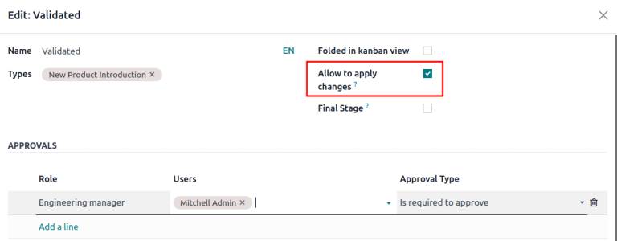

ECO type¶
An ECO type is assigned to engineering change orders (ECOs) to organize and track changes to products and bills of materials (BoMs). Each ECO type separates ECOs into a project in Gantt view, ensuring collaborators and stakeholders only view and assist with relevant BoM improvements.
For example, an electronic chip manufacturer might use ‘New Product Introduction’, ‘Product Improvement’, ‘Component Change’, and ‘Firmware Update’ ECO types. Then, designers and engineers can focus on ECOs in the ‘New Product Introduction’ and ‘Product Improvement’ projects, avoiding unrelated supplier change or firmware update ECOs.
Create ECO type¶
To access and manage ECO types, navigate to .
Create a new ECO type by clicking New. On the new ECO Types form, fill in the following information:
Name: the name of the ECO type, which will organize all of the ECOs of this type in a project.
Email Alias: if this optional field is filled, emails submitted to this email address automatically generate ECOs in the left-most stage of this ECO type.
Example
The Formulation change ECO type is used to organize and track related ECOs in a single
project. Configuring the Email Alias field generates ECOs in the Formulation
change project sent to the email address, pawlish-change@pawlished-glam.odoo.com.

Edit ECO type¶
Modify existing ECO type names and email aliases by navigating to the page. There, click on the desired ECO type from the list.
On the form for each ECO type, proceed to edit the Name and Email Alias fields.
Stages¶
Within an ECO type project, stages are like milestones and are used to identify the progress of the ECO before the changes are ready to be applied. (e.g. ‘Feedback’, ‘In Progress’, ‘Approved’, ‘Complete’)
Additionally, required approvers can be added to each stage, ensuring that changes to the production BoM cannot proceed until the approver reviews and approves the ECO. Doing so prevents errors on the production BoM by enforcing at least one review of suggested changes before they’re applied on a production BoM.
For best practice, there should be at least one verification stage, which is a stage with a required approver, and one closing stage, which stores ECOs that have been either canceled or approved for use as the next production BoM.
Create stage¶
To add a stage, go to the app and select the intended project for an ECO type from the PLM Overview dashboard.
Then, on the Engineering Change Orders project pipeline for the ECO type, click the + Stage button. Doing so reveals a text box to fill in the name of the stage. After filling it in, click the Add button to finish adding the stage.
Example
A new Assigned stage separates assigned ECOs from the unassigned ones in the New stage.
Adding another stage helps the product manager track unassigned tasks.
Verification stage¶
Click an ECO type from to open a kanban view of ECOs of this type.
To configure a verification stage, hover over the intended stage, and select the ⚙️ (gear) icon. Then, click Edit to open a pop-up window.
Configure the verification stage in the edit stage pop-up window, by checking the box for Allow to apply changes.
Then, add an approver in the Approvers section, by clicking Add a line, and specifying the Role of the reviewer, their User, and Approval Type.
Make sure at least one approver is configured with the Approval Type: Is required to approve.
The approver listed is automatically notified when ECOs are dropped in the stage specified in the pop-up window. Once finished, click Save & Close.
Example
In the ECO type New Product Introduction, the verification stage Validated is configured by
clicking the ⚙️ (gear) icon, and selecting Edit. Doing so opens the
Edit: Validated pop-up window.
By adding the Engineering manager as an approver, only ECOs approved by this user can proceed
to the next stage, and have the changes applied on the production BoM.
Additionally, check the Allow to apply changes option to ensure proper behavior.
Closing stage¶
Configure a closing stage by opening the Edit: [stage] pop-up window. To do so, hover over the intended stage and click the ⚙️ (gear) icon that appears in the top-right corner. Then, click Edit from the drop-down menu.
On the Edit: [stage] pop-up window, select the check boxes for Folded in kanban view, Allow to apply changes and Final Stage.
Example
The closing stage, Effective is configured by checking the Folded in kanban view,
Allow to apply changes, and Final Stage options